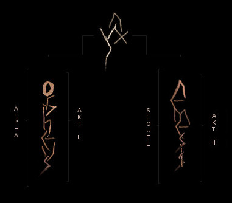

What is Phoenix?
A gothic drama narrated like a greek tragedy, with the game world serving as the stage for a meaningful story. Acted out like a virtual tale, a philosophical reflection and a timeless allegory with different plots depending on the players decisions and playstyle, PHOENIX is an Immersive Sim.
Set in a mystic valley full of conflict, decay and atmospheric density and completely designed by hand, it bears a unique aesthetics clad in retro graphics, with a gameplay focused on immersion by visualisation: No numbers, no statistics, just roleplay.
A Gothic (Alpha) Reboot; based on and conceived as a genuine Reboot of GOTHIC™ (2001), inspired by the original vision of the four founders of Piranha Bytes, PHOENIX is what GOTHIC could have been in 1999... In order to preserve and to present this vision inherited by our project we have created the Gothic Archive, where we publish diverse pre-release material that we have been provided by former Gothic developers to rescue the design.
PHOENIX is not an official title of the GOTHIC franchise, it's an independent and non-commercial project by PhoenixTales, a small but international indie-team of freely associated developers.
All this material in the archive, the underlying design philosophy and the gothic artstyle are analysed in a collective effort of "alpha research", which is documented in our extensive Design Documentation, on the basis of which we continue the development of GOTHIC under its old name PHOENIX, without compromises and beyond corporate constraints.
Under the pressure of time, technical and financial limitations, the radical vision of Gothic had to be compromised and the final product was shaped into a fragment of what it could have been, culminating in a conflict about a worthy successor, that led to the cancellation of the first, forgotten GOTHIC SEQUEL. A realisation of this fragmented vision, PHOENIX is the mosaic, a reconstruction of "the Alpha" of GOTHIC and a continuation in the spirit of its original Sequel with additional levels.
We attempt to realise this dream, as we imagined the game to be by the words written and images shown to us before release, to reconstruct it and turn it into one harmonious and coherent whole. We attempt to realise all the radical ideas of the founders, bring them to an end, and maybe thereby help, at least a bit, to heal the old wounds of their clash of dreams.
For more infos read our FAQ and Design Concept. You also may want to join our community on Discord.
The Story
ACT I: ORPHEUS
The Alpha: Chapter 1-6
You are thrown into a self-organised penal colony without guards, sealed from the outside world through a magical barrier; a prison full of convicts which only serve one purpose - mining the precious magical ore to fuel the kingdom's war outside. Experience anarchy: Gangs with different ideologies and brutal force govern the world of the condemned and a mysterious sect is in search of an ancient temple to awaken a sleeping god.
Your goal is to survive and to escape from the magical prison that drives you on the edges of madness into the underworld. Night is the beginning of all things. Can you endure the dreams of the Sleeper?
ACT II: NEMESIS
The Sequel: Chapter 7-11
You wake up from months of unconsciousness to walk through the ruins of the prison you tried to escape from. Pave your way through the war-torn city of Khorinis in decay: Explore the different quarters under control of opposing groups, the poverty of the slums and the legendary, now abandoned ore factories. Dive into a world of refugees, fleeing from a war of prophetic cause.
You are on a mission to end war - in four special plots depending on your chosen faction. Amid the consequences of your Nemesis, you are in search of peace, but hunted by your past, by prophecies of inevitable fate - and by the ancient mystery of the Phoenix.

Flosha: What do you think about our project?
Tom Putzki: You are mad. But in the most positive sense.